01
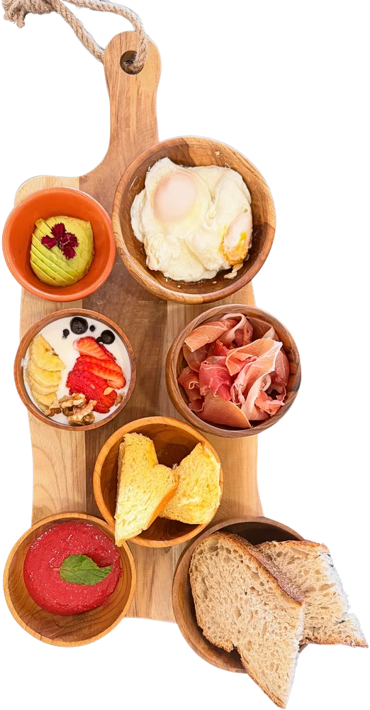
Brunch a tu maneraMezcla, combina y disfruta.
Vecindario · Gran Canaria
Café 100% arábico, platos preparados al momento, jugos naturales y una carta pensada para disfrutar sin prisa.
Specialty coffee
· brunch · pet friendly
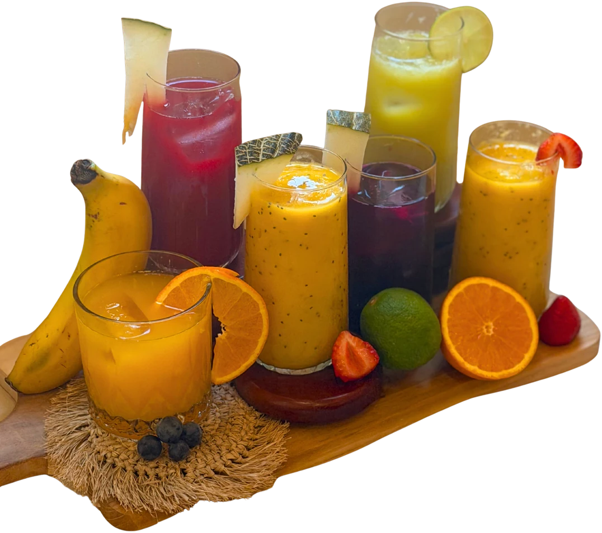
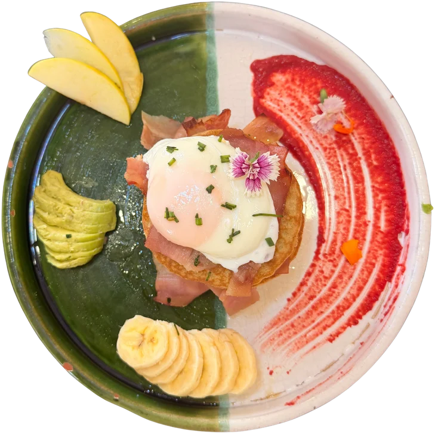
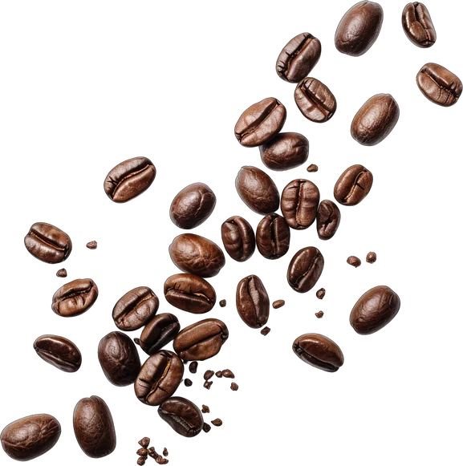
Energía que se siente.
Equilibrio que se vive.
La experiencia Chakra
Más que una cafetería: un espacio para comer rico, bajar el ritmo y reconectar con los pequeños placeres.

Nuestra filosofía
“Crear no es seguir reglas ni buscar el resultado perfecto, sino entregarse al proceso con amor.”
Celebramos lo imperfecto, lo hecho con intención y ese ratito que te devuelve a ti.
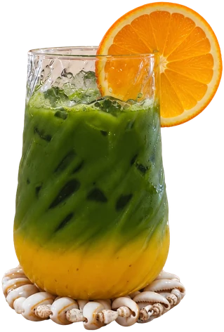
Para todos
Chakra es pet friendly. Queremos que cada visita se sienta sencilla, cálida y compartida.
Favoritos de la casa
Una selección de la carta actual. Preparaciones al momento, ingredientes naturales y una presentación muy Chakra.
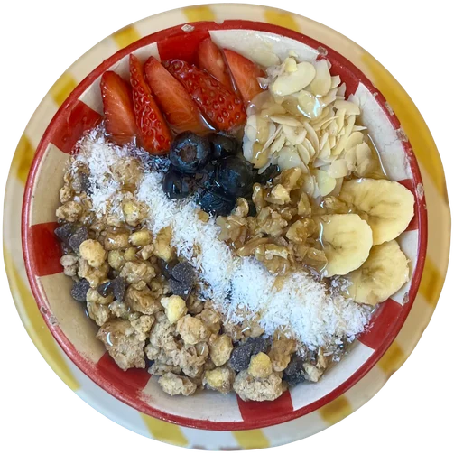
Açai, bebida vegetal, fruta fresca, granola, crema de cacahuete, chía y frutos secos.
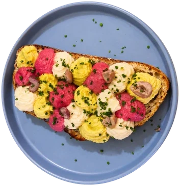
Trío de hummus de remolacha, curry y comino sobre masa madre con kalamata.
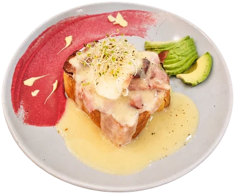
Pan brioche, huevo poché y salsa holandesa. Elige bacon, mechada o salmón ahumado.
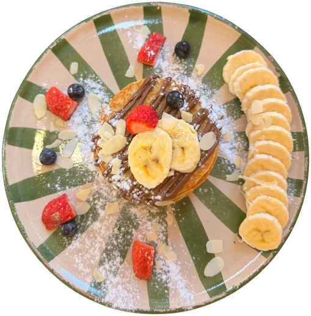
Con plátano, arándanos, fruta de temporada, almendras y tu topping favorito.
Elige tu momento
Cuéntanos qué te apetece y te proponemos un pequeño ritual de la carta.
Café 100% arábico, textura cremosa y un momento para bajar el ritmo.
Ver en la carta ↘Pequeños rituales
Desde un expreso hasta un flat white, pasando por golden milk, chai y lattes con sabor.
Avena, almendra, soja y opciones sin lactosa; coco también disponible.
Elaborados con frutas y verduras frescas, con combinaciones inspiradas en los chakras.
Nuestra Filosofía
Una manera de entender el café, el brunch y los antojos desde Vecindario, con sabor y sin etiquetas.
TENEMOS UN PROBLEMA.
Hay demasiadas cafeterías que dicen lo mismo.
Que si café de especialidad.
Que si brunch.
Que si buen ambiente.
Que si momentos únicos.
Así que decidimos hacer otra cosa.
VENIMOS A CREAR ANTOJOS QUE NO SABÍAS QUE TENÍAS.
De esos que aparecen cuando ves algo en la carta y piensas:
“Vale… esto lo necesito.”
Un café que no tenías pensado pedir.
Un plato que no estaba en tus planes.
Un matcha que acaba convirtiéndose en tu nuevo favorito.
Un desayuno que se alarga mucho más de lo previsto.
Porque para nosotros, comer y beber también es descubrir.
Chakra es café, brunch, sabores, mezclas y un poquito de sorpresa.
Es venir por una cosa
y terminar encontrando otra.
Es cambiar de opinión.
Probar.
Compartir.
Repetir.
Y, sobre todo, hacerle caso a ese pequeño antojo que aparece de repente.
Desde Canarias, pero sin etiquetas.
Porque no importa de dónde vienes.
Importa qué te pide el cuerpo cuando llegas a CHAKRA
Color. Textura. Calma. Antojo.
Toca una foto para verla de cerca · arrastra para explorar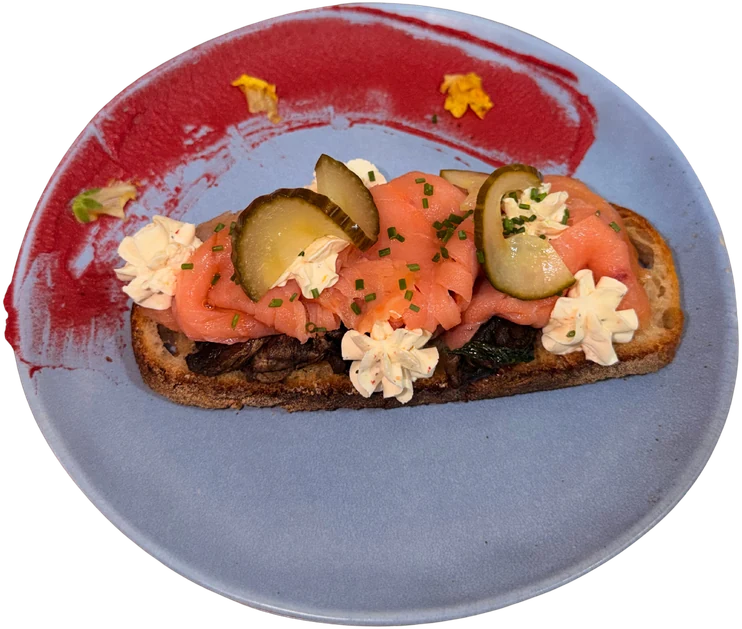
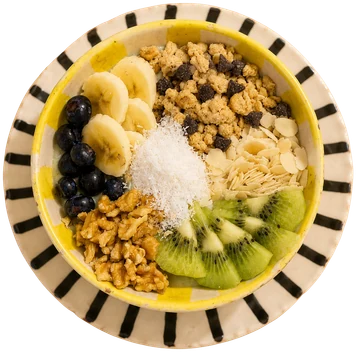
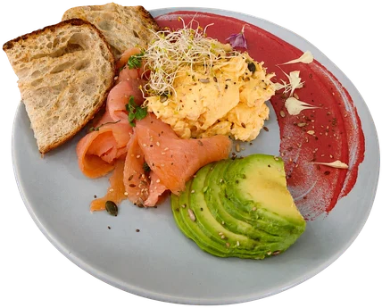
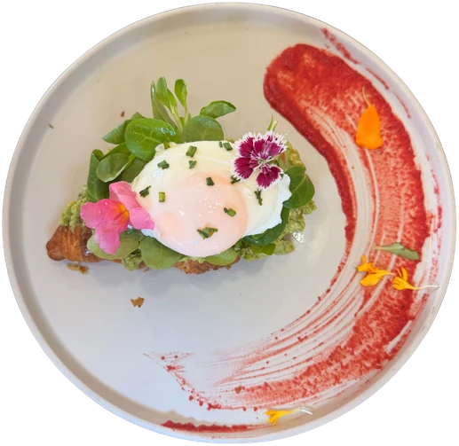
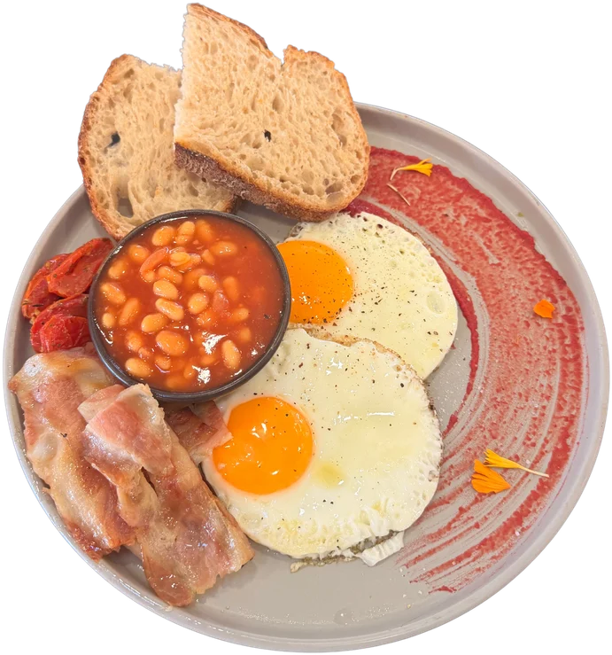
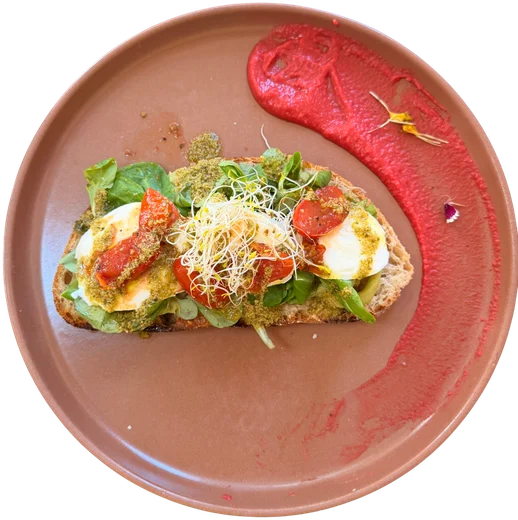
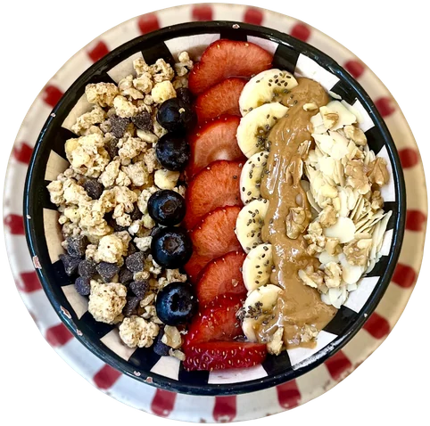
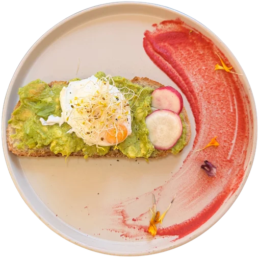
“Acogedor, rico, diferente y con un trato que invita a volver.”
Es la idea que más se repite al leer las opiniones: ambiente agradable, propuestas variadas, café cuidado y un equipo cercano.
Ven a Chakra
Av. de Canarias, 337
35110 Vecindario, Las Palmas
Lunes–viernes · 8:30–19:30
Sábado–domingo · 8:30–15:00
Antes de venir
Si te queda alguna duda, escríbenos por WhatsApp y te ayudamos.
Sí. Puedes preparar tu reserva desde esta web y enviarla directamente por WhatsApp al equipo.
La carta indica que hay pan sin gluten disponible. También avisa de posible contaminación cruzada, por lo que conviene consultar al equipo si existe alergia o celiaquía.
Sí. La carta incluye avena, almendra y soja, además de opciones sin lactosa y leche de coco con suplemento.
Sí. Chakra se presenta como un espacio pet friendly.
En Av. de Canarias, 337, 35110 Vecindario, Las Palmas. Puedes abrir la ruta directamente desde la sección “Visítanos”.